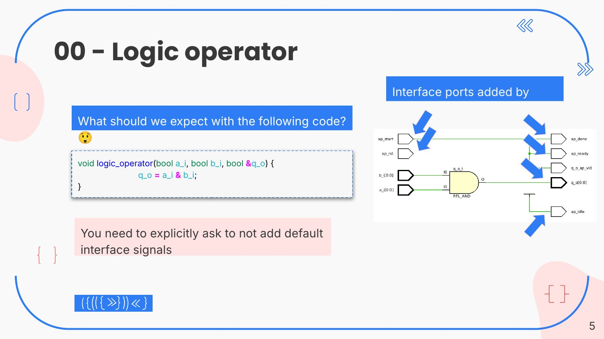
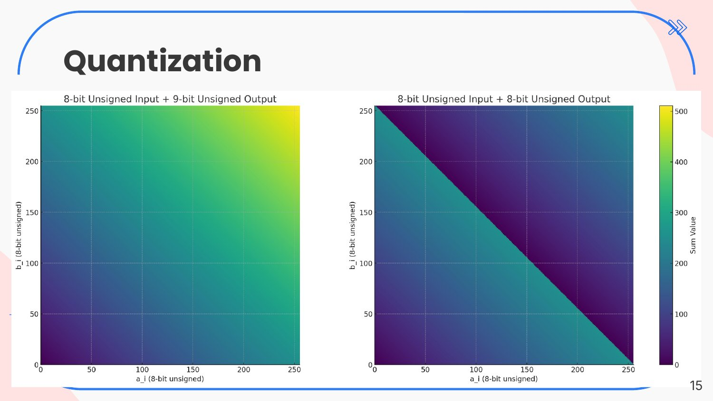
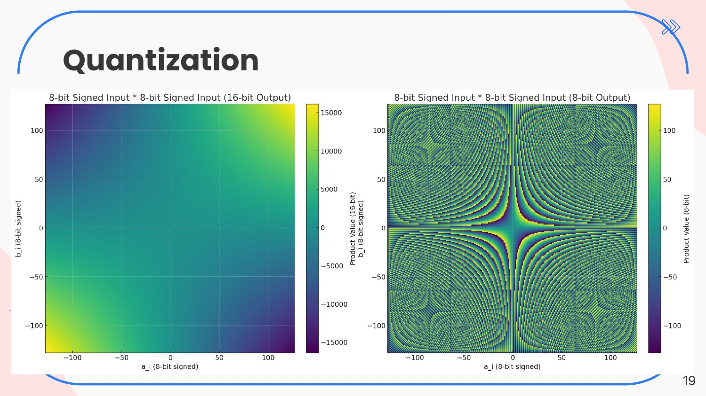
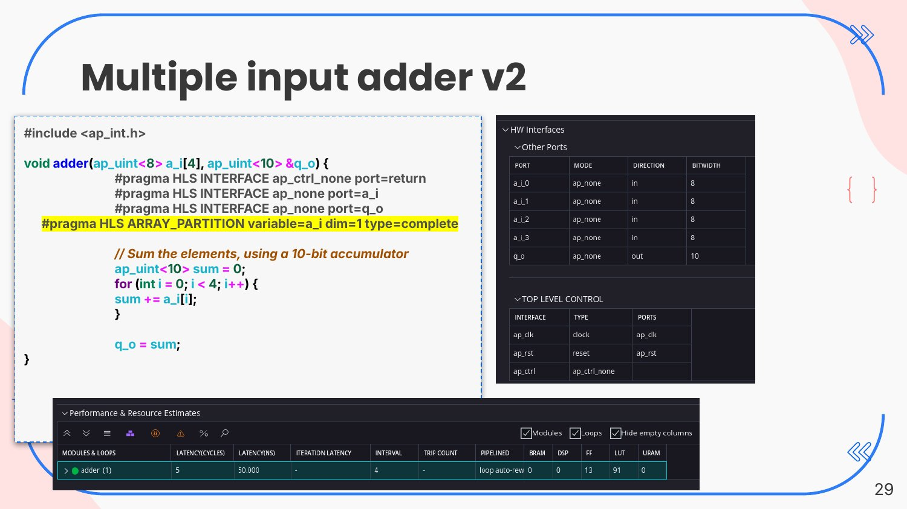
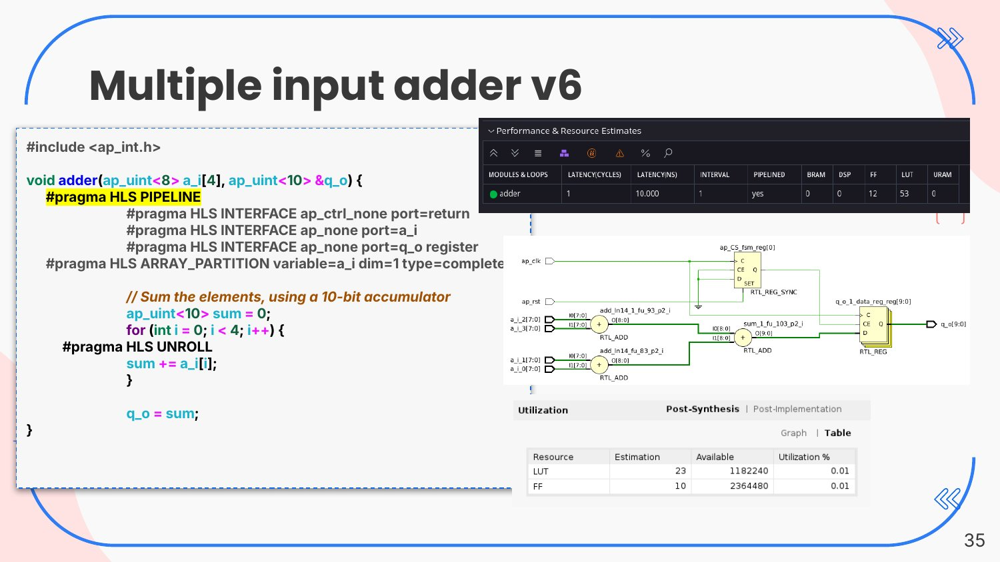
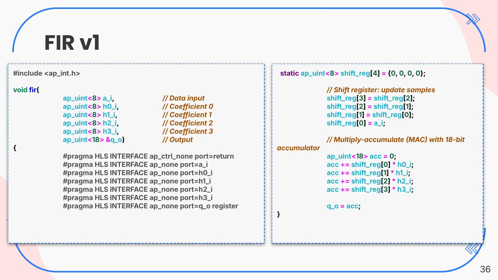
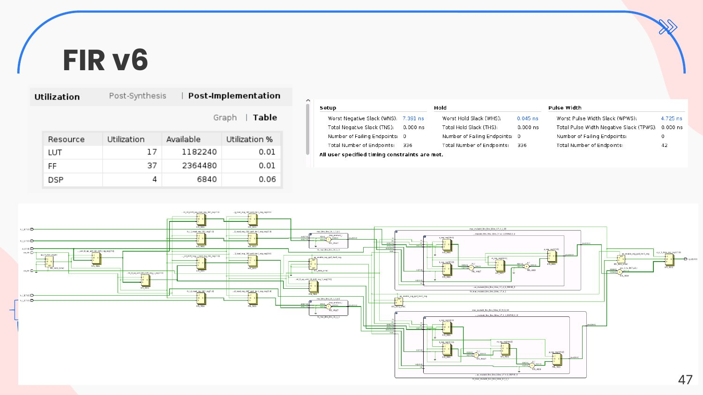

In June 2025 I taught a session called Starting with HLS at the US AHEAD bootcamp at Brookhaven National Laboratory. It was aimed at people who know C++ and want to see what happens when that C++ becomes hardware. The session had no theory slides. It was a sequence of short code snippets, each one a small change from the previous, and for each one we looked at what the tool built. This post follows the same path, from a single logic gate to a pipelined FIR filter.
The examples use AMD Vitis HLS. The ideas carry over to other tools, though the pragmas are spelled differently.
One gate, and a surprise
The first example is the smallest function I could think of: two booleans in, their AND out.
void logic_operator(bool a_i, bool b_i, bool &q_o) {
q_o = a_i & b_i;
}The question to the room was what hardware to expect. A single AND gate is the honest answer, and it is not what you get. The tool adds a block-level handshake by default: a clock, a reset, start and done signals, and handshake ports around each argument. That is useful when the function is an accelerator that a processor starts and waits for. It is noise when the function is meant to be a piece of a trigger datapath.

To get rid of them you have to ask, with interface pragmas: ap_ctrl_none on the return to remove the block handshake, and ap_none on each argument to make it a plain wire. After that the schematic is an AND gate and almost nothing else. The reset stays, because synchronous circuits need one and Vitis adds it by default.
The next three snippets swap the AND for an addition, an if-else and an if-else that chooses between an addition and a subtraction. They make one point that surprises software people: an if does not choose which code runs. Both branches are built in hardware, side by side, and a multiplexer chooses which result goes to the output. An integer is 32 bits wide by default, so every one of those adders is 32 bits wide too.
Make it as big as it needs to be
In C++ an int is a convenience. In hardware every bit is a wire, a flip-flop or a slice of logic. The arbitrary-precision types ap_int<N> and ap_uint<N> let you state the width you actually need, and they are the single most important change when moving code from software to HLS.
With the width in your hands, you can also get it wrong. The slides show this with pictures. Each heat map has the two 8-bit inputs on the axes and the output value as the colour. With a 9-bit output, the sum of two 8-bit unsigned numbers is a smooth gradient: it always fits. With an 8-bit output, half of the plane wraps around to zero along the diagonal, and the map turns into two triangles. A multiplication into too few bits is worse: the picture becomes an interference pattern, because almost every result has overflowed.


The rule that came out of it fits on one line. For an addition the output needs one bit more than the wider input, Q = max(A, B) + 1. For a multiplication it needs the sum of the input widths, Q = A + B. Anything less and the result is not an approximation, it is wrong.
Adding a clock
All of this is combinational. The third part of the session added registers. Writing register in the interface pragma of the output puts a flip-flop after the logic. The PIPELINE pragma tells the tool to accept a new input every clock cycle and to insert registers wherever its timing model says they are needed.
State is where HLS looks most unlike software. A counter needs a value that survives from one call of the function to the next, and in HLS that is a static variable. Each call of the function is one clock cycle of the hardware. A static variable is a register.
Six versions of a four-input adder
The longest exercise was a function that adds the four elements of an array of 8-bit numbers into a 10-bit result. The code hardly changes over six versions. Only the pragmas do, and the hardware changes completely.
ap_uint<10> sum = 0;
for (int i = 0; i < 4; i++) {
sum += a_i[i];
}
q_o = sum;Without any pragma the loop is a loop in hardware too: one adder, used four times, with a small state machine that walks through the elements. With the array partitioned into four separate ports, the second version reports a latency of five clock cycles and accepts a new input only every four. That is a loop in silicon, and it is cheap.

Unrolling the loop by a factor of two halves the number of iterations. Unrolling it completely gives three adders in a tree and no state machine at all. Adding a register at the output and then the PIPELINE pragma gives the final version: one clock cycle of latency, a new result every cycle, two 9-bit adders feeding a 10-bit one, and a register at the output. The synthesis report shows 23 look-up tables and 10 flip-flops.

The lesson is not that one version is right. Each one is the right answer to a different question. If the result is needed once every four cycles, version 2 is the efficient one. If it is needed every cycle, version 6 is. In HLS that choice is a pragma, and it can be revisited when the requirement changes.
A FIR filter
The session ended with a four-tap FIR filter, the classic block of digital signal processing: keep the last four samples in a shift register, multiply each by a coefficient and add the products. The first version is written exactly like that, with the shift register as a static array and the multiply-accumulate written out term by term.

Later versions replace the four coefficient arguments by an array, write the shift and the multiply-accumulate as loops, and then add the same pragmas as for the adder: partition the coefficient array, unroll the loops, pipeline the function. The 18-bit accumulator follows from the rule above: an 8-bit sample times an 8-bit coefficient needs 16 bits, and the sum of four products needs two more.
The last version uses four DSP blocks, 17 look-up tables and 37 flip-flops, and closes timing with more than 7 ns of slack. The code is short enough to read in one glance, and it is ordinary C++ that a test bench can call a million times before any hardware is built.

What I wanted people to leave with
Three things. First, the tool does what you say, not what you mean, and its defaults are made for accelerators, not for datapaths. Look at the schematic, not only at the code. Second, width is a design decision, and the overflow rules are simple enough to apply every time. Third, the same C++ can become very different hardware, and the pragmas are the place where that decision lives. That is also why HLS is worth learning: the decision can be changed late in a project, by changing one line, without rewriting the design.
During the same bootcamp I also presented how we had used HLS in production for the ATLAS calorimeter trigger. That story is in a separate post. The full slides of this session are linked at the top of the page.